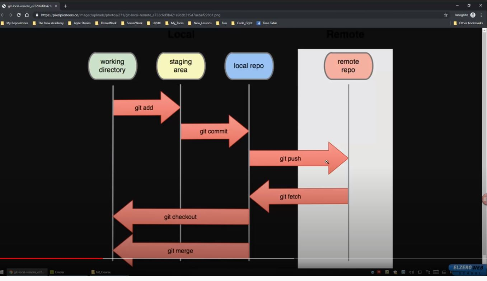

-
Words You Will Hear
-
Repository
-
Branch
-
Local Repo (on pc)
-
Remote Repo ( Gitlab -GithUP - company server)
-
Commit (Snapshot or Checkpoint in your local repo)
-
Clone (From local [to another local] or remote)
-
push (upload local changes to remote)
-
pull (you pull changes from remote repo to your local)
-
pull request (tell other about your changes to pull it from local to remote >> someone review my code)
-
Commands
-
git clone + 'REPO LINK'
To Clone Repo in local
-
git status
-
git add [ * | files siperates with ' ' ]
To Add To Stage

-
git reset head [file name]
to remove file from stage
-
git commit -m '[my message here]'
to transfer from staging to local repo
-
-